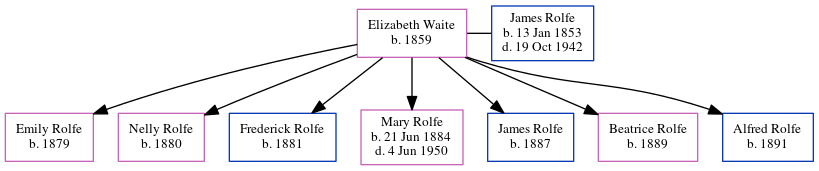

Elizabeth Serena Rolfe (née Waite) 1859 -
[ Home ] | [ Calendar ] | [ Surnames Index ] | [ Census Index ] | [ Family History ]Elizabeth Waite, the wife of James Rolfe (the first cousin three-times-removed on the father's side of Nigel Horne), was born in Binfield, Oxfordshire, England in 18591,2 and married James (a coachman with whom she had 7 children: Emily, Nelly, Frederick, Mary Jane, James, Beatrice and Alfred) in Henley on Thames, Oxfordshire, England around Aug 18783.
During her life, she was living at Casement Cottage, Cheriton, Kent, England on Apr 3, 18811; and at Cheriton Court in Cheriton on Apr 5, 18912.
Children
- Emily was born in 1879
- Nelly was born in 1880
- Frederick was born in 1881
- Mary Jane was born on Jun 21, 1884
- James was born in 1887
- Beatrice was born in 1889
- Alfred was born in 1891
Citations
- 1881 England, Wales & Scotland Census - Findmypast (was age 22 and the wife of the head of the household)
- 1891 England, Wales & Scotland Census - Findmypast (was age 30 and the wife of the head of the household)
- England & Wales Marriages 1837-2005 - Findmypast
Media
1891 England, Wales & Scotland Census - GBC/1891/0006020828
Family Tree
Generated by ged2site. Last updated on Jun 11, 2024